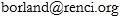

Senior Visualization Researcher
Renaissance Computing Institute (RENCI)
The University of North Carolina at Chapel Hill

I was born in Glasgow, Scotland, but moved to The United States of America when I was ten years old.
I attended Clemson University for my undergraduate degree, obtaining a B.S. (Winter 2000) in
Computer Science,
with an Emphasis Area in Fine Arts and a Minor in Philosophy.
I obtained my M.S. (Spring 2003) and Ph.D. (Spring 2007)
in Computer Science from The University of North Carolina at Chapel Hill.
My advisor was Russ Taylor, and my dissertation area was in scientific visualization,
specifically a new volume visualization technique for medical images called
flexible occlusion rendering. As part of the requirements for fulfulling my
Ph.D. I was also co-instructor for a graduate-level scientific visualization course
taught at UNC-Chapel Hill and NC A&T.
From the Summer of 2007 to the Summer of 2010 I was a Senior Visualization Researcher at the Renaissance Computing Institute
(RENCI), where I worked with various collaborators, mostly from UNC-Chapel Hill,
on projects requiring visualization expertise.
In the Fall of 2010, I began working as a Research Fellow for IDIBAPS with Mavi Sanchez-Vives and Mel Slater in the
Event Lab at the Universitat de Barcelona in Catalunya, Spain, studying the effects and applications of embodiment in
virtual characters within virtual-reality environments. In the Spring of 2010, I also became manager of the new
CAVE virtual-reality facility at the Event Lab.
I returned to RENCI in the Summer of 2012, where I have continued my work as a Senior Visualization Researcher.
My main areas of research interest include data visualization, computer graphics, virtual reality, image processing and analysis, and haptic interfaces.
Take a look around to find out even more exciting information!